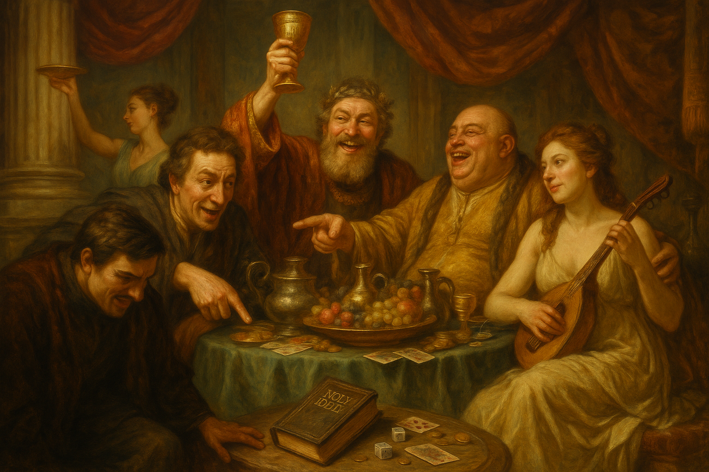

贅沢と嘲笑──「義を愛し、不法を憎む」という視点から見た象徴的な場面
「愛する時」ではない時の見極め
多くのキリスト教の宗派では「神の愛は無条件にだれにでも与えられる」と教えていますが、実はそうではありません。
愛が与えられるべきではないこともあります。
愛そのものを否定しているのではなく、⚠️ 愛を注ぐべき対象や状況を誤ってはいけない ⚠️ということです。
愛が万能で常に無条件に向けられるべきだと考えると、聖書の他の部分と矛盾します。なぜなら、神やキリスト自身が「義を愛し、不法を憎む」と記されているからです。
💠 愛を差し控える相手
（聖句参照：詩139:21,22／イザ26:10／詩21:8,9）
- 🔹 神を激しく憎む者（詩139:21,22）— 神を敵とみなし、反抗をやめない者は「紛れもない敵」。
- 🔹 悪の道に凝り固まった者（イザ26:10）— 慈しみを受けても正しさを学ばず、悪を続ける人に愛を示しても益はない。
- 🔹 義を拒む者（詩21:8,9）— 神が敵として扱い裁かれる相手に、人間が愛を注ぎ続けるのは神の義に反する。
💡 なぜ一部の人は神と敵対するのか？
- ➡️ 神を厳しく自由を奪う存在と見なす。
- ➡️ 神の規範を束縛とみなし拒否する。
- ➡️ 「自分が神のようになりたい」という誇りと独立心。
- ➡️ 自分の利益や権力を守るため。
- ➡️ 神に対する誤った見方を改めようとしない。
💡 なぜ愛すべき時ではないのか
- ・🚫 愛が無駄になる場合： 神を憎む人は愛に応答せず、実を結ばない。
- ・⚖️ 義を守るため： 神もイエスも「正しいことを愛し、悪を憎む」姿勢を示された。
- ・🔥 裁きの時： 神が敵に裁きを下す時は、憐れみの時ではなく、公正を行使する時。
🌿 バランスの理解
とはいえ聖書は「隣人を自分のように愛せよ」（マタ22:39）とも命じています。つまり、⏳人が神を憎む者となるまでは、すべての人に愛を差し伸べるべきです。
「愛するのに時がある」とは、愛が無条件に続くわけではなく、❌ 対象が完全に神を敵とした時点で終わる ❌という区切りを示しています。
✅ 結論
「愛する時ではない」のは…
- ・神を激しく憎み、反抗をやめず、悪の道に固執しているとき
- ・神が敵として裁きを下す時
その時には、愛を示し続けることは義に反し、むしろ「憎むべき時」とされます。